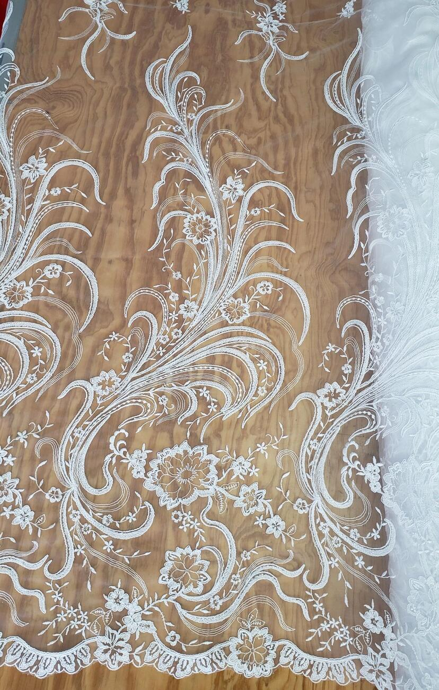
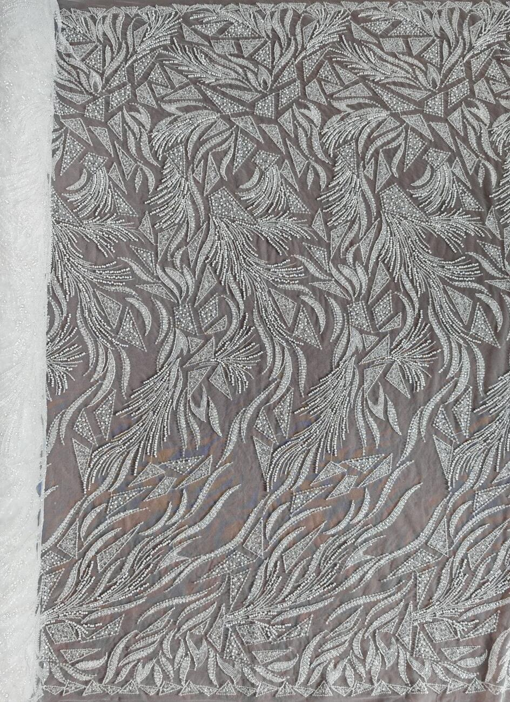
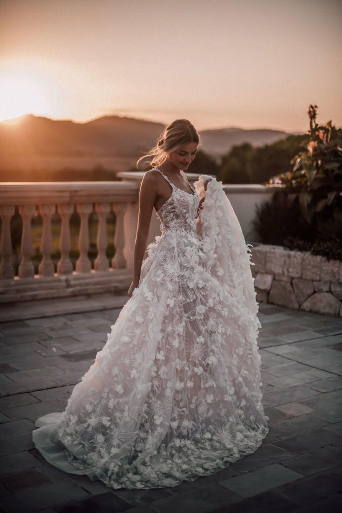
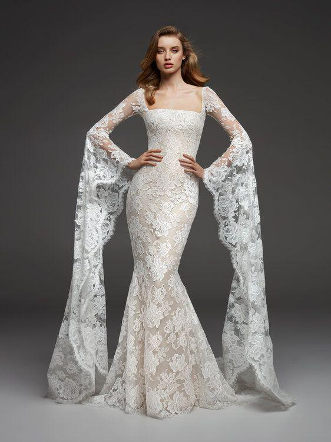

Novias
Tul bordado, encaje floral y pedrería en blanco e ivory — para el vestido que se lleva una sola vez.





Así se ve terminado
El mismo tul bordado, ya convertido en vestido. Nuestras clientas nos mandan fotos como esta para que veamos el resultado final — y para que otras novias se animen a pedir la misma tela.

Para cada tipo de corte
Escote cuadrado, sirena, corte A — el encaje y el tul bordado se adaptan al diseño que ya tienes en mente con tu modista.